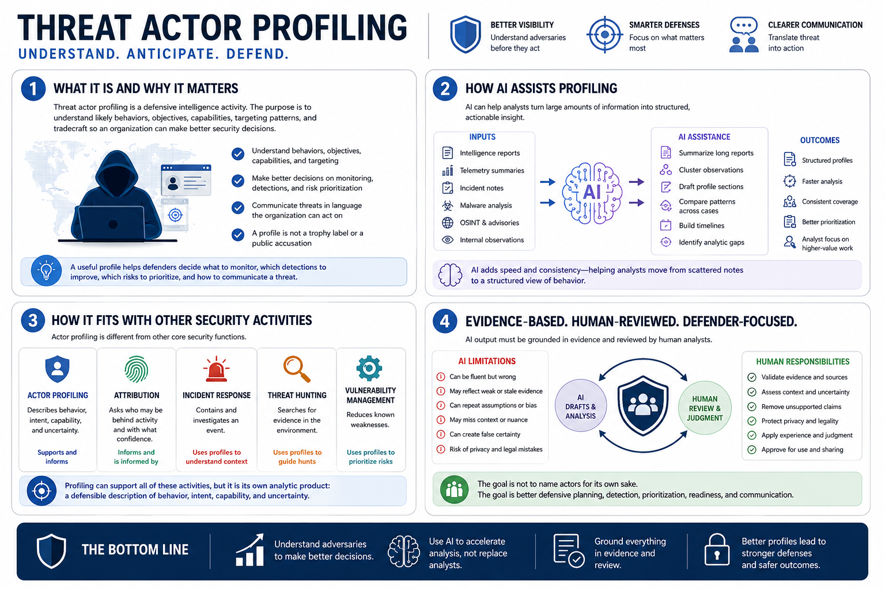

What AI-Assisted Threat Actor Profiling Means
Connecting to LMS... Progress: in progress

Narration
Threat actor profiling is a defensive intelligence activity. The purpose is to understand likely behaviors, objectives, capabilities, targeting patterns, and tradecraft so an organization can make better security decisions. A profile is not a trophy label or a public accusation. A useful profile helps defenders decide what to monitor, which detections to improve, which risks to prioritize, and how to communicate a threat in language the organization can act on.
AI can assist with the heavy analytic workload around profiling. It can summarize long reports, cluster observations, draft profile sections, compare patterns across cases, build timelines, and identify analytic gaps. It can help analysts move from scattered notes to a structured view of behavior. The value is speed and consistency, especially when analysts are reviewing many reports, telemetry summaries, incident notes, and intelligence updates.
Actor profiling is different from attribution, incident response, threat hunting, and vulnerability management. Attribution asks who may be behind activity and with what confidence. Incident response contains and investigates an event. Threat hunting searches for evidence in an environment. Vulnerability management reduces known weaknesses. Profiling can support all of those activities, but it is its own analytic product: a defensible description of behavior, intent, capability, and uncertainty.
AI output must be grounded in evidence and reviewed by human analysts. A model can write a fluent profile even when the evidence is weak, circular, stale, or misunderstood. Human review protects the organization from overconfidence, unsupported claims, privacy mistakes, and sensational reporting. The goal is not to name actors for its own sake. The goal is better defensive planning, detection, prioritization, readiness, and communication.